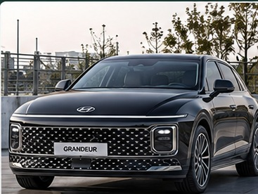
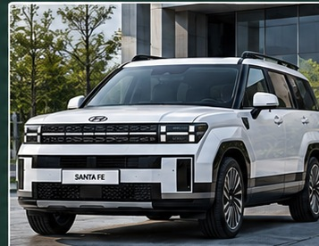
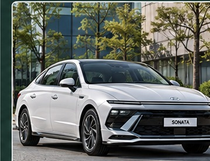
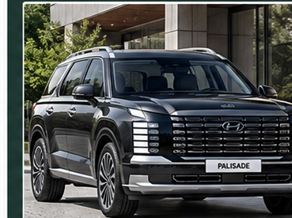
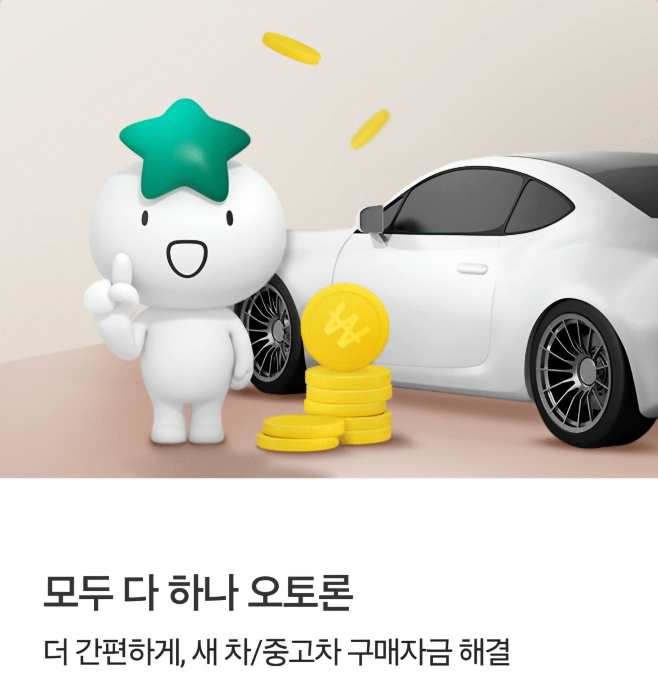
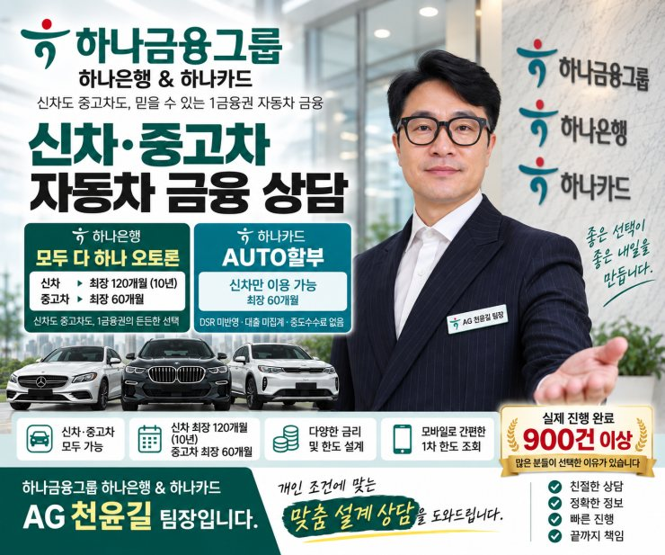

① 월 납입금이 부담될 때
장기 상환으로 월 납입금을 분산할 수 있지만 120개월은 총이자가 커질 수 있습니다.
현대자동차 신차 구매 전, 카매니저가 안내한 상품 외에도 선택 가능한 금융 구조가 있는지 비교해 보세요. 하나은행 오토론 최장 120개월, 하나카드 AUTO할부 60개월 등 상품별 상환 기간과 월 부담, 총이자, DSR 및 향후 대출 계획을 함께 고려합니다.
내 조건 상담하기 ↗기존 현대차 홈페이지 보기 ↗대출·할부 승인 및 금리는 개인별 심사와 금융사 기준에 따라 달라집니다.
차량 구매 과정에서 제조사 제휴 금융상품이나 담당 카매니저가 추천하는 금융사를 먼저 안내받는 경우가 있습니다. 추천 상품이 좋은 조건일 수도 있지만, 해당 상품만이 유일한 선택지인지는 계약 조건과 이용 자격을 확인해야 합니다.
캐피탈·파이낸셜·카드사 상품이라고 무조건 불리한 것은 아닙니다. 금리 할인이나 프로모션, 유예할부의 월 납입금 경감 등 장점도 있습니다. 반면 대출 분류, 잔존금, 중도상환 조건, 신용평가 반영 여부와 향후 주택담보·전세·신용대출 심사 영향은 상품별로 다릅니다.
카매니저는 차량 판매·출고를, 자동차 금융 상담은 상품별 금융구조 비교를 중심으로 담당합니다. 복합 금융을 검토할 때는 금융사별 병행 제한과 약정·결제 순서를 사전에 확인하는 것이 중요합니다.
장기 상환으로 월 납입금을 분산할 수 있지만 120개월은 총이자가 커질 수 있습니다.
같은 60개월이라도 은행 오토론과 카드 할부의 실제 금리·총비용·중도상환 조건을 비교합니다.
신용·소득·기존 부채·DSR·선수금·차량 교체 계획을 함께 살펴 적정 상환 구조를 검토합니다.
| 구분 | 하나은행 오토론 | 하나카드 AUTO할부 |
|---|---|---|
| 기간 | 심사 조건에 따라 최장 120개월 | 최장 60개월 중심 |
| 상품 성격 | 은행 대출 상품, DSR 심사 고려 | 비대출성 할부 상품으로 안내되는 구조, 실제 약관 확인 필요 |
| 비교 핵심 | 장기 월 부담 분산, 총이자 증가 가능 | 금리·총이자·중도상환 조건 비교 |
| 한도·승인 | 최대 6,000만원 범위 내 개인별 심사 | 카드사 심사·이용 조건에 따라 결정 |
상품별 세부 조건과 이용 가능 여부는 시점 및 심사에 따라 달라집니다. DSR 제외 여부가 모든 신용평가·향후 대출 심사에 영향이 없다는 의미는 아닙니다.
은행 승인 한도와 차량 가격에 차이가 있으면 별도 부족금 보완 가능성을 검토할 수 있습니다. 금융상품 병행은 각 금융사의 제한·심사·약정·결제 절차 확인 후에만 진행해야 합니다. 1차 조회는 최종 승인이 아닙니다.
실제 블로그에 게시된 사례를 요약했습니다. 개별 결과는 다른 고객에게 동일하게 적용되지 않습니다.

실제 상담 후기개인별 결과 상이60개월 월 납입금 부담을 고려해 장기 상환 구조를 검토

실제 상담 후기개인별 결과 상이주거 관련 금융 계획과 월 부담을 함께 고려

실제 상담 후기개인별 결과 상이선수금 없는 구매를 위해 별도 부족금 구조 검토

실제 상담 후기개인별 결과 상이1차 5,000만원에서 본심사 후 한도가 변경된 사례
차량 이미지는 해당 차종의 외관을 참고해 AI로 제작한 이미지로, 실제 상담 차량의 촬영 사진은 아닙니다. 팰리세이드는 신형 디 올 뉴 팰리세이드(LX3) 외관을 참고했습니다.
현재 기존 대출과 향후 주택담보·전세대출 계획까지 함께 고려해 월 상환 가능 금액을 점검합니다.
1차 조회와 본심사 결과를 구분하고, 필요시 플랜B 병행 제한과 실행 순서를 확인합니다.
금융상품 심사·약정·송금 이후 카매니저가 진행한 차량 등록 결과를 등록증으로 확인합니다.

최근 발행된 블로그 게시글 6개를 날짜순으로 보여드립니다.
블로그 최신 게시글을 불러오는 중입니다.
아닙니다. 제조사 제휴 금융의 프로모션 조건과 별개로, 자격이 맞는 하나은행 오토론이나 하나카드 AUTO할부 등도 비교할 수 있습니다. 차량 구매 혜택과 결제 제한은 사전에 확인해야 합니다.
신용·소득·DSR·기존 대출·차량 가격에 따라 달라집니다. 은행 승인 한도가 부족하면 선수금 또는 별도 보완 방안을 검토하지만 전액 승인이나 병행 실행을 보장하지 않습니다.
120개월은 같은 금리·원금이라면 월 납입금이 낮아지지만 총이자는 커질 수 있습니다. 60개월은 월 부담이 상대적으로 높지만 총이자 절감에 유리할 수 있어 월 상환 능력과 차량 교체 시점을 함께 비교합니다.
실제 적용 금리는 개인별 심사, 금융상품, 시점에 따라 달라집니다. 명목 금리뿐 아니라 총이자, 중도상환수수료, 부대비용과 우대조건을 함께 확인하는 것이 좋습니다.
비대출성 AUTO할부는 일반적으로 대출성 상품과 DSR 적용 방식이 다릅니다. 다만 카드사 심사 및 신용평가, 향후 금융기관 심사에 미치는 영향은 별도로 확인해야 합니다.
아닙니다. 1차 조회는 참고 결과이며, 본심사에서 소득·재직·DSR·기존 부채 등 확인 후 최종 승인 금액과 조건이 달라질 수 있습니다.
아닙니다. 부족금 보완은 개인별 심사와 금융사 간 병행 가능 여부, 약정 및 결제 순서 등을 확인한 뒤 검토해야 합니다.
장기할부는 차량 교체 시점에 남은 원금이 클 수 있습니다. 예상 잔액과 매각대금, 중도상환 조건을 미리 비교하고 부분 중도상환 계획도 검토하는 것이 좋습니다.
금리·월 납입금·총이자·DSR과 향후 금융계획을 함께 고려한 조건 비교 상담
